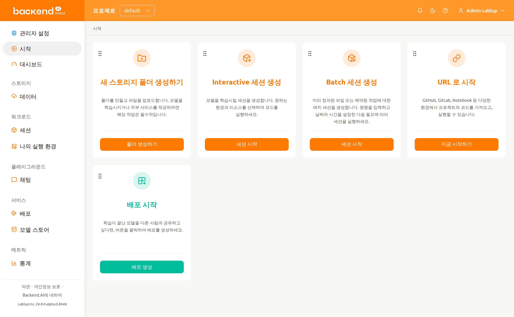
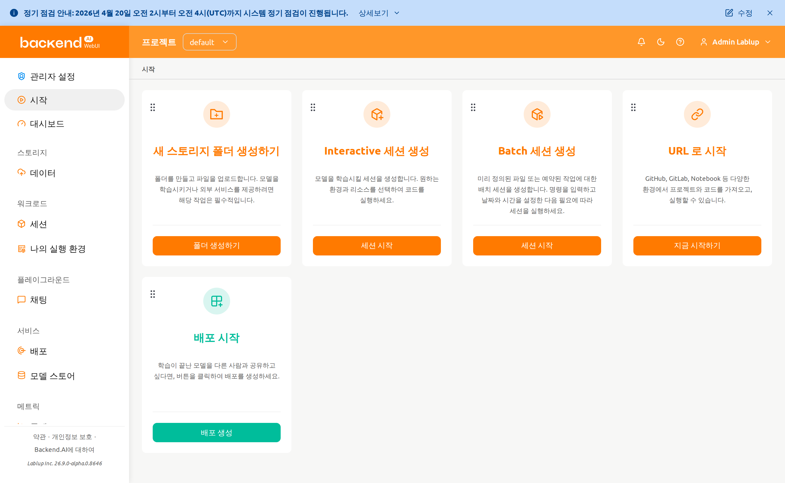
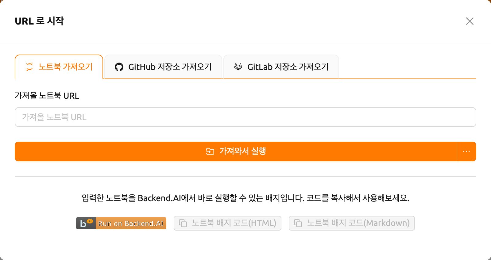
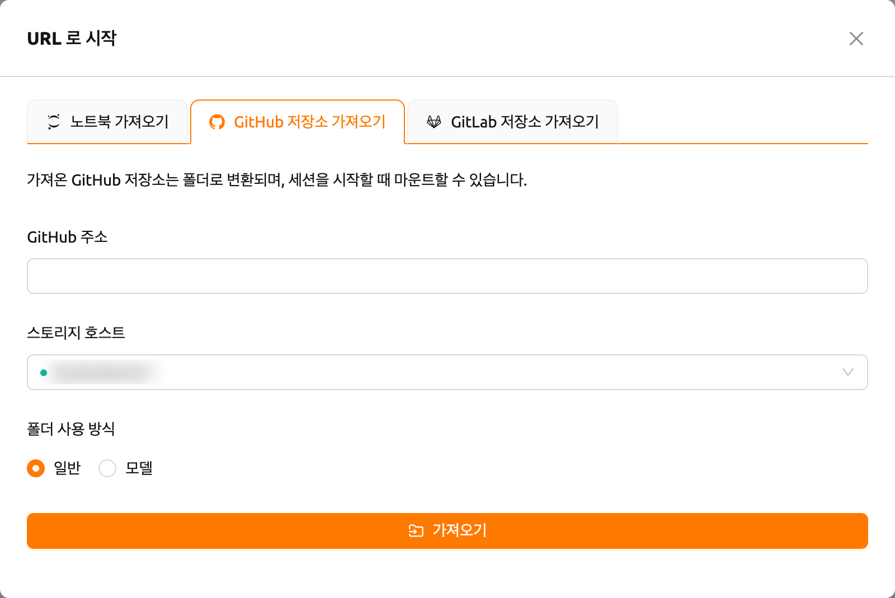
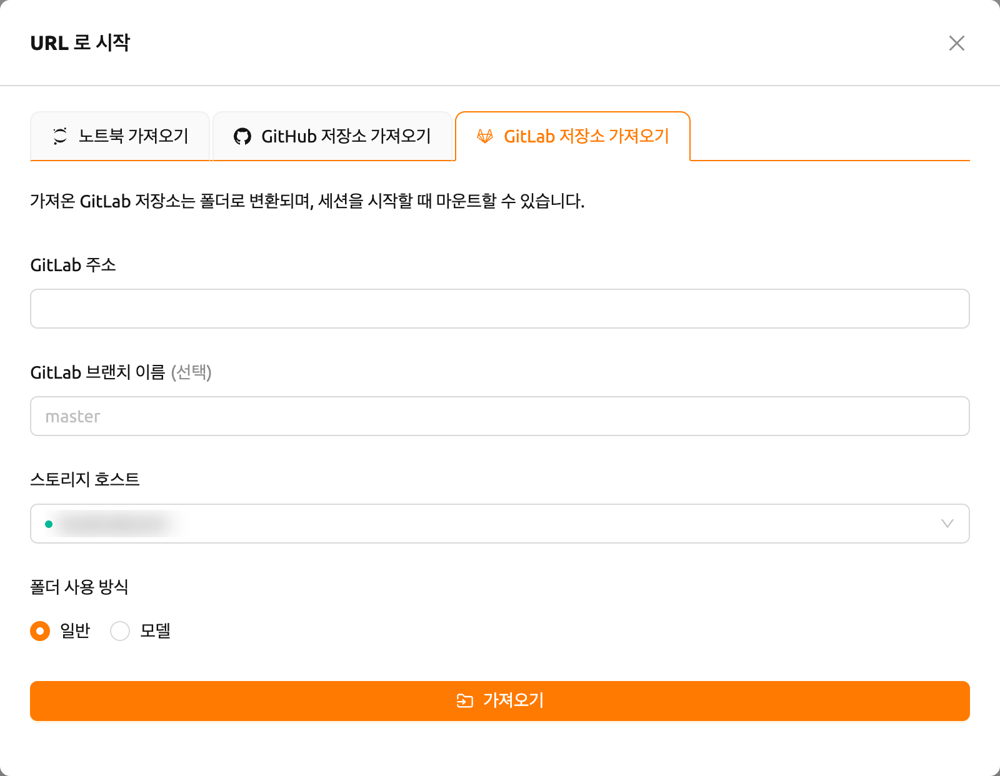
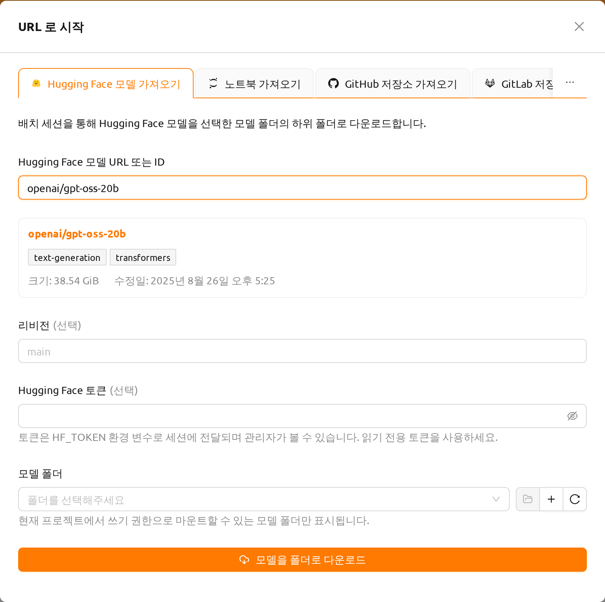

시작 페이지#
시작 페이지에서는 자주 사용하는 WebUI 기능에 액션 카드를 통해 빠르게 접근할 수 있습니다. 각 카드는 스토리지 폴더 생성, 세션 실행, 모델 배포, 외부 URL에서 프로젝트 가져오기 등 주요 워크플로를 나타냅니다.

공지사항 배너#
시스템 관리자가 공지사항을 게시한 경우, 시작 페이지뿐만 아니라 모든 페이지 상단에 배너가 표시됩니다. 공지사항은 Markdown 형식을 지원하며, 시스템 유지보수, 업데이트, 사용 가이드라인 등 중요한 안내를 포함할 수 있습니다.

내용이 긴 공지사항은 첫 줄을 한 줄로 요약한 형태로 접혀서 표시됩니다. 배너의 상세보기를 클릭하면 공지사항 전문이 표시되고, 접기를 클릭하면 다시 접을 수 있습니다.
닫기 아이콘을 클릭하면 배너가 닫힙니다. 닫은 배너는 현재 브라우저 세션 동안 계속 숨겨지며, 관리자가 새로운 공지사항을 게시하거나 기존 공지사항을 변경하면 다시 표시됩니다.
슈퍼 관리자의 경우 배너에 수정 버튼이 함께 표시되며, 이 버튼을 클릭하면 공지사항 수정 대화상자가 열려 어느 페이지에서든 공지사항을 수정할 수 있습니다. 자세한 내용은 시스템 공지사항 섹션을 참고하세요.
액션 카드#
시작 페이지에는 기본적으로 다음 액션 카드가 표시됩니다:
- 새 스토리지 폴더 생성하기: 스토리지 폴더를 생성하고 파일을 업로드합니다. 모델을 학습시키거나 외부 서비스를 제공하기 위한 필수적인 첫 단계입니다. 버튼을 클릭하면 폴더 생성 대화상자가 열립니다.
- Interactive 세션 생성: 모델을 학습시킬 세션을 생성합니다. 원하는 환경과 리소스를 선택하여 코드를 실행할 수 있습니다.
- Batch 세션 생성: 미리 정의된 파일 또는 예약된 작업을 위한 배치 세션을 생성합니다. 명령을 입력하고 날짜와 시간을 설정한 다음 필요에 따라 세션을 실행합니다.
- 배포 시작: 학습이 끝난 모델을 다른 사람과 공유하기 위해 배포를 생성합니다.
- URL 로 시작: GitHub, GitLab, Jupyter Notebook 등 다양한 환경에서 URL을 통해 프로젝트와 코드를 가져올 수 있습니다.
서버 설치 및 설정 환경에 따라, 배포 카드 등 일부 카드가 비활성화되어 있을 수 있습니다. 해당 기능의 사용을 원하시는 경우, 시스템 관리자에게 문의하십시오.
URL 로 시작#
URL 로 시작 카드를 사용하면 외부 소스에서 프로젝트를 가져와 바로 실행할 수 있습니다. 카드를 클릭하면 가져오기 원본별로 노트북 가져오기, GitHub 저장소 가져오기, GitLab 저장소 가져오기 탭이 있는 대화상자가 열립니다. 실험적 기능인 Hugging Face 가져오기를 활성화하면 Hugging Face 모델 가져오기 탭이 추가로 표시됩니다.
노트북 가져오기#

가져올 노트북 URL 필드에 Jupyter Notebook URL(
.ipynb으로 끝나는)을 입력합니다가져와서 실행 버튼을 클릭하면 자동으로 세션이 생성되고 Jupyter에서 노트북이 열립니다
버튼 옆의 드롭다운 화살표를 클릭하고 설정 후 실행을 선택하면 실행 전에 세션 환경을 사용자화할 수 있습니다.
노트북은 연산 세션 내부에서 다운로드되므로(부트스트랩 스크립트가 curl -O <url>을
실행합니다), 입력한 URL은 연산 세션에서 접근할 수 있어야 합니다. localhost나
127.0.0.1 같은 로컬 주소는 사용자의 컴퓨터가 아니라 세션 컨테이너 자신을 가리키므로
동작하지 않습니다. 연산 세션에서 접근 가능한 URL을 입력하세요.
팝업 차단기를 해제해야 실행 중인 노트북 창을 바로 확인할 수 있습니다. 또한, 세션을 실행할 자원이 충분하지 않은 경우 가져온 노트북이 실행되지 않습니다.
탭 하단에서 "Run on Backend.AI" 뱃지 코드를 생성할 수 있습니다. HTML 또는 Markdown 뱃지 코드를 복사하여 프로젝트 문서에 바로 실행 링크를 삽입할 수 있습니다.
뱃지 코드를 생성하기 전에 로그인되어 있어야 합니다. 그렇지 않으면 먼저 로그인한 후 다시 시도해 주십시오.
GitHub 저장소 가져오기#

- GitHub 주소 필드에 유효한 GitHub 저장소 URL을 입력합니다
- 저장소가 저장될 스토리지 호스트를 선택합니다
- 필요한 경우 폴더 사용 방식(일반 또는 모델)을 설정합니다
- 가져오기 버튼을 클릭하여 저장소를 새 스토리지 폴더로 복제합니다
가져온 저장소는 스토리지 폴더로 변환되며, 세션 시작 시 마운트할 수 있습니다.
GitLab 저장소 가져오기#

- GitLab 주소 필드에 유효한 GitLab 저장소 URL을 입력합니다
- 필요한 경우 GitLab 브랜치 이름을 지정합니다 (기본값:
master) - 저장소가 저장될 스토리지 호스트를 선택합니다
- 필요한 경우 폴더 사용 방식(일반 또는 모델)을 설정합니다
- 가져오기 버튼을 클릭하여 저장소를 새 스토리지 폴더로 복제합니다
Hugging Face 모델 가져오기#
Hugging Face 모델 가져오기 탭에서는 Hugging Face의 모델을 모델 폴더로 다운로드할 수 있습니다. 다운로드한 모델은 이후 연산 세션에 마운트하거나 배포로 서비스할 수 있습니다.
이 탭은 사용자 설정 페이지의 실험적 기능 항목에서 Hugging Face에서 가져오기를 활성화해야 표시됩니다. 실험적 기능은 향후 업데이트에서 변경되거나 제거될 수 있습니다.

Hugging Face 모델 URL 또는 ID 필드에 모델을 입력합니다.
https://huggingface.co/openai/gpt-oss-20b와 같은 모델 페이지 URL과openai/gpt-oss-20b와 같은 모델 ID를 모두 사용할 수 있습니다. 데이터셋, 스페이스 등 모델이 아닌 페이지의 주소는 허용되지 않습니다.필드에 유효한 모델을 입력하면 잠시 후 대화상자가 Hugging Face에서 모델을 조회합니다. 확인하는 동안 로딩 표시가 나타나며, 가져오기를 시작하기 전에 필드 아래에 미리보기 카드를 표시합니다. 카드에는 Hugging Face 페이지로 연결되는 모델 ID 링크, 모델의 작업 및 라이브러리 태그, 크기, 수정일이 표시됩니다.
필요한 경우 리비전에 다운로드할 모델 저장소의 브랜치, 태그 또는 커밋을 입력합니다. 비워 두면 기본 리비전을 다운로드하며, 입력한 주소에 리비전이 포함되어 있으면 해당 리비전을 사용합니다.
필요한 경우 Hugging Face 토큰을 입력합니다. 접근이 제한되었거나 비공개인 모델에는 토큰이 필요합니다.
다운로드할 모델 폴더를 선택합니다. 필드 아래의 안내 문구처럼 현재 프로젝트에서 쓰기 권한으로 마운트할 수 있는 모델 폴더만 표시됩니다. 다운로드 세션이 폴더에 파일을 쓰기 때문에 읽기 전용으로만 마운트할 수 있는 폴더는 제외됩니다. 선택기 옆의 버튼으로 선택한 폴더 열기, 새 모델 폴더 생성, 목록 새로고침을 수행할 수 있습니다. 새 폴더를 만들 때는 마운트 권한을 읽기 및 쓰기로 설정하십시오. 읽기 전용 마운트 권한으로 만든 폴더는 다운로드 대상으로 사용할 수 없으며, 읽기 및 쓰기 마운트 권한으로 폴더를 만들라는 경고가 표시됩니다.
모델을 폴더로 다운로드 버튼을 클릭합니다.
대화상자가 닫히고 다운로드를 수행하는 배치 세션이 시작됩니다. 다운로드는 해당 세션 내부에서 진행되므로 세션 페이지에서 진행 상황을 확인할 수 있으며, 세션이 성공적으로 종료되면 모델을 사용할 수 있습니다. 세션이 실패하면 다운로드가 완료되지 않은 것이므로 모델을 사용할 수 없습니다.
모델은 선택한 폴더 안에 모델 이름으로 만들어진 하위 폴더에 저장됩니다. 예를 들어
openai/gpt-oss-20b는 gpt-oss-20b/에 다운로드됩니다. 따라서 하나의 모델 폴더에
여러 모델을 함께 보관할 수 있습니다.
토큰은 다운로드 세션에 HF_TOKEN 환경 변수로 전달되며 관리자가 확인할 수
있습니다. 읽기 전용 토큰을 사용하십시오.
이 탭은 모델 폴더로 다운로드하므로, 배포 기능이 활성화된 계정에서만 사용할 수 있습니다. 크기가 큰 모델은 다운로드에 오랜 시간이 걸리며 대상 폴더의 저장 용량을 소모합니다.
카드 레이아웃 사용자화#
시작 페이지의 액션 카드는 드래그 앤 드롭으로 재배치할 수 있습니다. 각 카드의 좌측 상단에 있는 드래그 핸들을 잡고 원하는 위치로 이동할 수 있습니다.
사용자화된 카드 배치는 자동으로 저장되어 브라우저 세션 간에 유지됩니다. 레이아웃은 사용자별로 저장되므로, 각 사용자가 자신만의 배치를 설정할 수 있습니다.